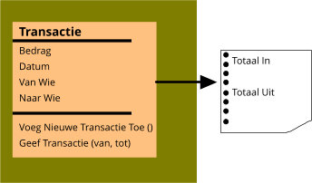
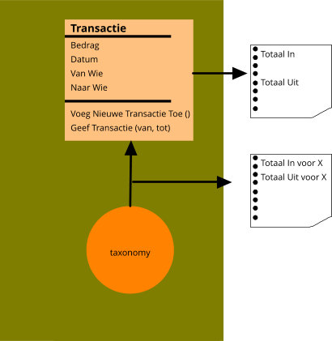
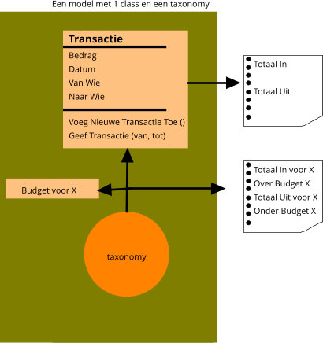
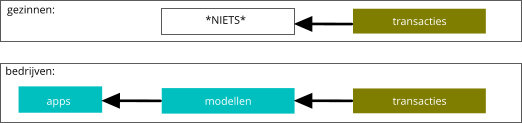
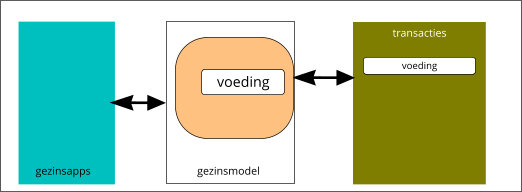

👪 Waarom het A-B-C=D Budget
Mensen gebruiken tools. En een tool gebruik je ergens voor. Dat waar je het voor gebruikt is het model. Dus voor het model "schilderij ophangen" is
een hamer en een spijker handig.
Blockchain's belofte is om na eeuwen het transactie model te verbeteren omdat er nu "IT" is. Wij denken dat je beter dat model zelf op schop kunt
nemen:
.
1. Een Transactie is geen model voor een Gezin

Als je iets moet maken voor iemand bijvoorbeeld een stuk software of een apparaat, dan maak je eerst een model van de werkelijkheid. Als
bijvoorbeeld de slager je vraagt om een computer programma te maken voor zijn slagerij dan teken je eerst allerlei blokjes die aan jezelf
uitleggen hoe een slagerij werkt. Dan pas implementeer je op basis van die blokjes je programma.
Eeuwen gelden is het model gemaakt hier links. Hierin is de modellering van iets? maar zeker geen gezin! teruggebracht tot 1 blokje, 1 class: "transactie". Deze heeft eigenschappen zoals
datum, bedrag, van en naar wie e.d. en je kunt er 2 vragen aan stellen: (a) maak een nieuwe transactie (waarbij de verbetering "blockchain" gerandeert dat dit zo is)
en (b) geef mij alle transacties op basis van... (bijvoorbeeld tussen 1-1-2019 en 1-1-2020) of (bijvoorbeeld "alle transactie met een +").
Het enige wat dit model je vertelt is wat de totale transactie waarde is, eventueel opgedeeld in plus en min of van wie naar wie:
dat zijn rapporten die je eruit haalt.
Dit model kan niet helpen met bezuinigen op voeding want hij heeft geen blokje "jou" en geen blokje "voeding" en al helemaal geen blokjes
die weten wat bezuiniging betekent (en waarom).
Het kan maar 1 ding. Geen Bloatware. Maar al eeuwen succesvol omdat iedereen een model begrijpt dat maar uit 1 blokje bestaat.
Er zijn mensen die geen budget software of sheet of boekje gebruiken. Ik denk dat dit komt omdat ze begrijpen dat je hier geen hol mee kunt
(maar wellicht wachten ze op iets wat dan wel zinnig is...)
2. Een Transactie met een Taxonomie is geen model voor een Gezin

Vrijwel alle spreadsheets thuis, geschreven huishoudboekjes de afgelopen eeuwen en alle thuis budget software en alle "office budget templates", voegen
er dan een "taxonomie" aan toe. Bijvoorbeeld taxonomy:kleur voor een boekje, taxonomy:category of taxonomy:label of taxonomy:tag of taxonomoy:post,
duizenden mogelijkheden en veel programma's ondersteunen dan ook meer taxonomieen dan een.
Hiermee kun je transacties in bepaalde groepen indelen. Bijvoorbeeld "alle transacties die te maken hebben met de gemeentebelasting" of "alles netflix"
Als er een hierarchische taxonomy ondersteund wordt kun je dan weer een groep maken van andere groepen zoals "vaste kosten" en "variabele kosten"
en daarbovenop kun je weer een groep maken "alle kosten"
Afhankelijk van tool en mogelijkheden doen mensen dat simpel of uitgebreid
Dit geeft de mogelijkheid om een aanvullende vraag aan "transactie" te stellen: "hoeveel voor taxonomy term X" (in een bepaalde periode) (bijvoorbeeld: de Kat
kostte dit jaar 500 euro
Veel tools geven je al een paar standaard taxonomieen hiervoor. Een organisatie als NIBUD heeft ook op sommige gebieden deel standaarden hiervoor. Het handige
hiervan is dat je jezelf beter kunt vergelijken met anderen.
Het probleem hierbij is dat die termen alleen bestaan uit een "woord", bijvoorbeeld "Kat". Maar in dit model zit geen "kat" en er zit ook logica om
te weten hoeveel een kat kost en ook geen logica met een link naar de katten encyclopedie etc... De labels die hier typisch gekozen worden zijn
labels die categorieen zijn voor transacties "dat ding dat niet bestaat en waar je niets aan hebt", het zijn geen normale mensen woorden die je
gebruikt als je een opstel moet schrijven over je gezin, of wat je zoal op een dag doet.
Er zijn mensen die wel op maandbasis checken hoe het staat met transacties per onderwerp maar die no way dat gaan relateren aan "het gezin zelf",
en dat is compleet logisch want in dit plaatje staat geen enkel woord wat betrekking heeft op "gezin", alleen een vaag woord "transactie". Dus die
mensen hebben compleet gelijk (maar wachten wellicht wel op iets wat dan WEL werkt...)
3. Een Transactie met een Taxonomie+Budget is geen model voor een Gezin

Door het toevoegen van de taxonomy is er de mogelijkheid om een extra eigenschap toe te voegen aan transacties: het budget.
Het is een property dat vanzelf onstaat omdat mensen denken hey... als ik het kan meten, kan ik het dan inschatten? Dat kon
ook al zonder taxonomy maar de zinvolheid ervan is dat je van te voren ongeveer inschat wat je kunt uitgeven en
dan aan het einde van jaar kijkt of dit correct was (en tussendoor af en toe kan checken). Bij een budget hoort dus altijd een periode.
Dit geeft mogelijkeden die iedereen begrijpt in woorden:
- je kunt een budget "maken" , daar hangen aan een groep transacties in de toekomst aan, die aan een bepaalde taxonomy term hangen (bijvoorbeeld "posten" of "tags")
het voordeel is dat je daar samen een mening over kunt vormen
- Het "maken" proces is dan interessant want het gaat erom alles te verdelen over alle terms totdat je 0 overhoudt. Dat zit vol met keuzes, acties en "overleg"
- je kunt de oudere "budget" eigenschappen lezen. Die van het verleden zijn handig voor inschattingen voor de toekomst.
- Je kunt het de huidige ook voortdurend lezen tot het moment dat een groep transacties hangend aan die term over een grens gaat en dan een alarm krijgen
Veel tools geven je al een paar standaard taxonomieen hiervoor. Een organisatie als NIBUD heeft ook op sommige gebieden deel standaarden hiervoor. Het handige
hiervan is dat je jezelf beter kunt vergelijken met anderen.
Wat niet handig is, is dat de groepering van transacties niet "mapt" naar iets binnen je gezin. Je moet zelf een woord verzinnen "kinderbijslag" en daar dan
al het werk voor doen: nazoeken, keuzes maken, internetten met andere woorden (technisch) : je "mapt" de groepen van transacties die je benoemd hebt met een woord
naar "ergens in je hoofd". En wat in je hoofd zit, is dan "het model in je hoofd van je gezin". Dat wat je dus allemaal in je hoofd moet doen ... dat zou nou juist
het voordeel moeten zijn van zo'n tool. Maar dat model zit helemaal niet in dit tool: dit is het verkeerde tool OF... datgene waar je dit naar toe zou mappen "ontbreekt".
Wat ook niet handig is, is dat mensen gaan denken in transactie taal in plaats van normale woorden taal. Je krijgt dan termen als "vaste kosten", "variabele kosten",
"periodiek", enz: woorden die niet bestaan, omdat mensen gedwongen worden in transactie taal te denken in plaats van gezins taal "het model van je gezin"
Er zijn dan mensen die heel gedetailleerd alles uitwerken tot op de euro nauwkeurig en dan relateren aan een "Woord" en anderen die gebruiken grove indelingen
en hebben maar een paar woorden nodig, (soms gewoon: datgene wat het betreffende budget programma vanzelf al doet). Die diversiteit komt omdat niet
iedereen zin heeft om alles in "transactie taal" op te gaan schrijven, temeer omdat ze de rest van het jaar "normale taal" gebruiken.
4. Het missende gezins model

Gezinnen worden gedwongen om te gaan denken in een abstracte "nulletjes en eentjes" transactie taal. Simpelweg omdat dit het enige model is wat op dit moment
verspreid wordt: in alle budget tools, in alle online software, in alle (office) "templates". Ook zelfgeschreven software of sheets praten dezelfde taal en
denken dus in "transactie taal". Geen wonder dat een hele laag van gezinnen dit niet doet: buiten de financieele branche wil niemand die taal spreken.
Daarbovenop bestaat de complete logica uit 1 (een) blokje "transactie": daarmee zou je de complexiteit van een gezin moeten modelleren...
Maar .... voor bedrijven is dit niet zo...
Voor bedrijven zijn er honderdduizenden modellen en miljoenen stukken software. Dit kan bijvoorbeeld een ERP pakket zijn zoals SAP (Oracle, Microsoft, etc)
dat talloze afdelingen van een bedrijf heeft gemodelleerd en voor elk specifieke afdeling en elk proces een programma heeft waarmee deze personen
geholpen worden. Door die complete modellering hangt alles aan elkaar en kan een medewerker van een afdeling in zijn eigen woorden zijn eigen werk
doen zonder te hoeven praten in "transactie taal".
Voor gezinnen is er ....*niets*, er is geen model voor "gezinsprocessen" want er is geen droog brood aan te verdienen. Er is wel een model voor raket naar Mars
en een model voor een zelfrijdende intelligente auto maar geen model voor gezin. Het enige model wat er bestaat is een model dat bestaat uit 1 blokje en
dat heet "transactie".
Dus de enige software is dan ook "transactie / budget software", waarmee je in transactie-taal moet praten met dit tool.
En dat is de richting waar we naar toe proberen te gaan met onze verbeteringen. Dat is niet ineens "compleet model" maar het is een aanzet tot.
We hebben het in ieder geval niet meer over "vaste kosten" en "variabele kosten" of "totale inkomsten" : want die begrippen die hebben we niet
in het gezinsmodel. En we hebben niet de hoofd-transactie-verdeling "alle positie transacties" en "alle negatieve transacties" zoals op de voorkant
van elk budget tool op dit moment maar we hebben het over "Pappa", "Mamma" en over "Luxe" en "Saai actie lijstje". Enzovoort.
ALS dit model wat completer wordt DAN kan "iemand" bovenop dit model software schrijven die slimme dingen doet. Bijvoorbeeld slimme vragen kan beantwoorden
(in gezins taal) of automatisch het budget maken omdat die software dan ons gezin begrijpt op basis van het model, of automatisch een
energie contract verbetering voorstellen. Of automatisch een boodschappenlijstje maken voor ons op basis van onze voorkeuren: dit heeft allemaal
een "transactie" kant maar ook een gezinskant.
DAN zijn er nog in het gezinsmodel veel en veel meer "blokjes" die helemaal niets te maken hebben met het transactie model. Bijvoorbeeld onze relaties en
contacten: vrienden en familie. Dat interesseert dat transactie blokje niet maar het zit wel in ons gezins model. Net zoals handleiding voor de wasmachine.
Iedereen heeft dit model in zijn hoofd. Met allerlei constructies wordt dit onderhouden: ordners, mapjes hier en der, lijstjes, onenote, wat losse
tooltjes her en der, maar het zijn fragmentjes.
5. Map tussen gezins model en transactie model

Tussen de taxonomie terms die een relatie hebben met een set transacties en de talloze objecten in het gezinsmodel moet er een mapping zijn.
Op dit moment doen mensen dit in hun hoofd. Daarom zijn die labels simpel: "kat". Op het moment dat er een gezinsmodel is dan kan die
mapping complexer worden (omdat er een tool die mapping zal doen en niet mensen).
In onze eerste aanzet hebben we "salaris" (simpel, nog steeds een vrij financieele term), gezin (de "mensen"), actielijstjes / Saai
en Geluk.
Met dit nieuwe model kun je wegdrijven van van het enige model wat Transactie kent: + of -. Het transactie model is gedreven op "veel +". bedrijven
denken dus ook zo "veel +". In het gezinsmodel kun je processen neerzetten die compleet andere logica of ilogica kennen. Die kunnen geluks gedreven zijn
of andere metrics. Of gewoonweg een lijstje waaruit je kunt kiezen of "AI" gedreven.
Maar het allerbelangrijkste is dat we "andere vragen" aan het model kunnen stellen. "gaan we naar thailand of bouwen we een tuinhuisje". Dit ligt nog
steeds heel kort op de vertaling naar transacties. Maar ik hoop dat het duidelijk is dat naarmate het model groeit, die afstand ook groeit, totdat
het niet meer herkenbaar is.
Maar "heel ver anders denken" kan pas, als het model completer wordt en dus de mapping meer complexere mappings ondersteund en mogelijk als er
stukjes software zijn die dit dan doen.
6. Toekomst
- het transactie model staat vast en is al eeuwenoud
- het gezinsmodel is in schets maar zou verder uitgewerkt moeten worden, dat kunnen we niet alleen
- programmeurs kunnen dan software schrijven die dit model implementeert OF via plugins en apps integreren met dit model
- het huidige A-B-C=D model werkt erg goed in het spreadsheet en is een goede eerste stap om op voort te bouwen